USUARIO1
-
CREAR TEMPLATE
Seguiremos las instrucciones del link proporcionado y crearemos el repo en local.
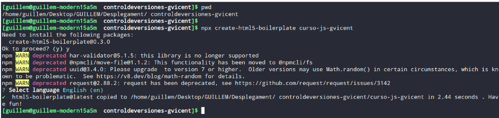
-
SUBIR A REMOTO
Seguidamente comprobamos que funciona (“npm run dev”) y subiremos el repo a remoto.
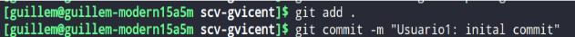
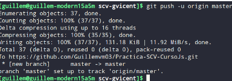
-
Comprobación
Podremos observar que en el repo de github está el commit inicial hecho por el usuario1.
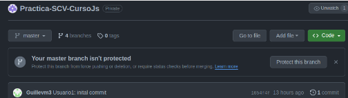
-
Implementacion git-flow
Crear develop:Crearemos la rama develop con el comando: “git checkout -b develop”. Esta rama la utilizaremos
como rama de desarrollo. No trabajaremos sobre ella directamente. De esta rama nacen todas las ramas de
feature.
Crear feature: Crearemos una rama de feature para el usuario 1 donde se añadirán nuevas funcionalidades.
Cuando acabameos de añadir todas las funcionalidades a esta rama, la rama develop hará un merge sobre está.
Crear hotfix: La utilizaremos para corregir errores críticos y según avancemos iremos haciendo merges sobre la
rama develop.
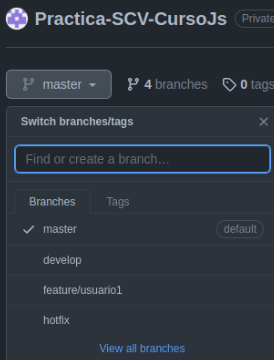
-
Usuario1-Desarrollo de la Página
Ahora simulando que somos el usuario1 vamos a modificar el template anteriormente creado para añadir aspectos
como el header, barra de navegación, footer etc…
Después subiremos los cambios realizados a la rama “feature/usuario1”.
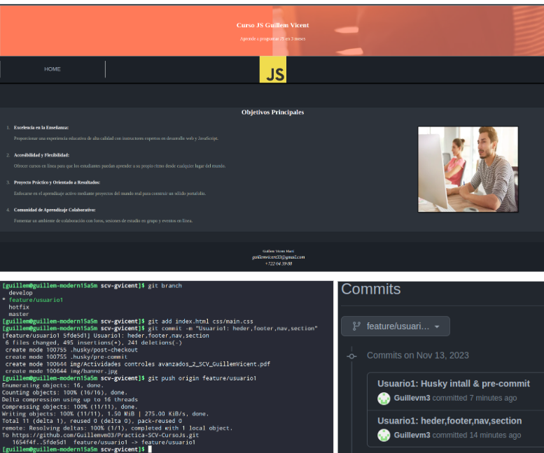
-
Usuario1-Instalar-Husky
Primero instalaremos las dependencias necesarias para poder trabajar con husky.
Ahora añadiremos dentro de la carpeta “.husky” los archivos “commit-msg” y “post-checkout”
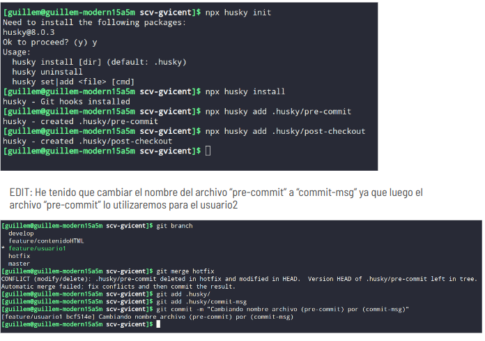
-
Usuario1-Hook-commit-msg
Ahora editaremos el archivo “commit-msg” y añadiremos un script que hará lo siguiente:
-Comprobar que estamos en la rama hotfix
-Comprobar que el mensaje de commit es correcto
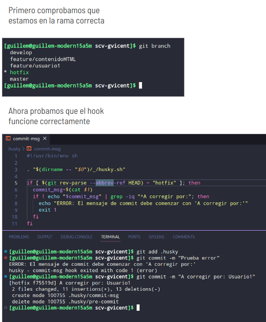
-
Usuario1-Hook-post-checkout
Primero crearemos el archivo dentro de la carpeta husky. Después visitaremos la web proporcionada y añadiremos
un dibujo al mensaje post-checkout.
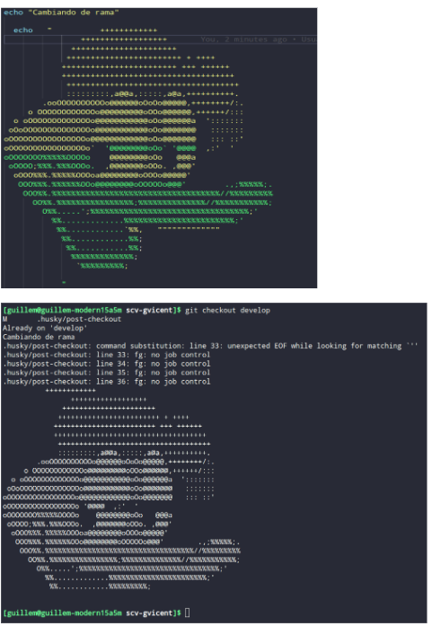
-
Usuario1-Develop-Merge
Después de terminar de implementar las funcionalidades del usuario1, haremos un merge de la feature del
usuario1 sobre la rama develop
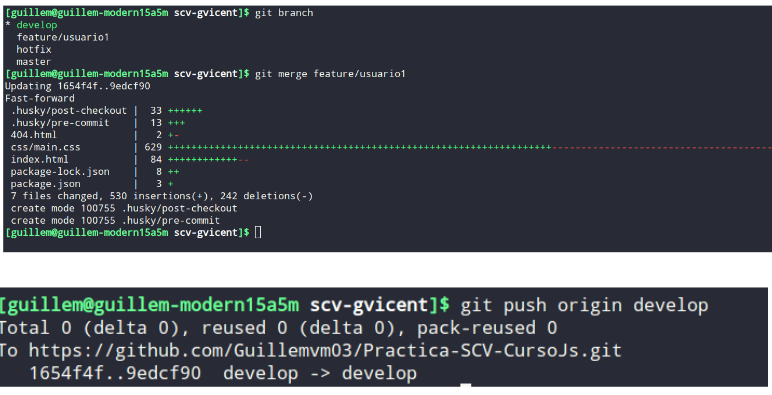
USUARIO2
Usuario2-Comandos-Contenido-HTML
Crear feature/contenidoHTML:Crearemos una nueva desde la rama develop con la que trabajaremos con el usuario2.
Añadiremos en está el contenido correspondiente en un nuevo archivo “contenidohtml.html” el cual irá indexado a
la barra de navegación
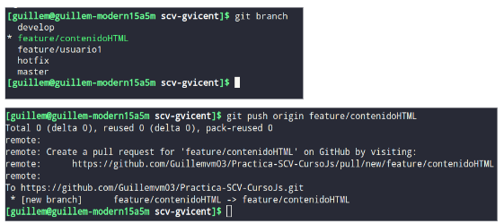
Código implentado: Al hacer clic en el botón, el texto dentro del párrafo con el identificador "demo" se
reemplaza con el encabezado "Hello JavaScript".
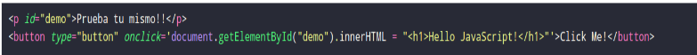
Usuario2-Desarrollo-Contenido-HTML
Archivo contenido.html:En el archivo contenido.html añadiremos una breve descripción de cómo funciona y una pequeña funcionalidad que mostrará al usuario un ejemplo.
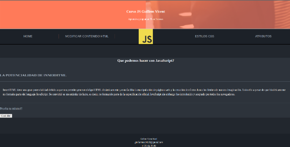
Funcionalidad:Al hacer click sobre el botón que mostrará esta pequeña funcionalidad podemos observar que cambiara el parrafo y mostrara “Hello Javascript”
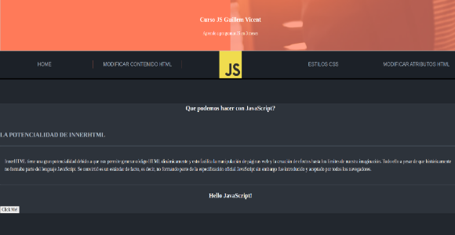
Usuario2-Comandos-Atributos-HTML
Crear feature/atributosHTML:Crearemos una nueva desde la rama develop con la que trabajaremos con el usuario2. Añadiremos en está el contenido correspondiente en un nuevo archivo “atributos.html” el cual irá indexado a la barra de navegación
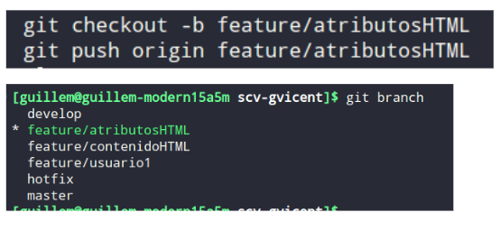
Codigo Implementado:Cuando haces clic en el botón "Cambiar imágenes", la función changeImages() busca todas las imágenes con el atributo 'alt' que contiene la palabra "especial". Para cada imagen encontrada, cambia su atributo 'src' (fuente) a una nueva URL específica, utilizando setAttribute('src', nuevaURL). En el ejemplo proporcionado, la imagen con 'alt' igual a "especial" verá su fuente modificada a una nueva URL.
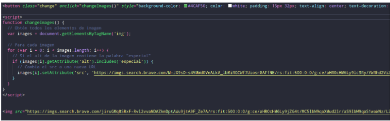
Usuario2-Desarrollo-Atributos-HTML
Archivo atributos.html:En el archivo contenido.html añadiremos una breve descripción de cómo funciona y un mini tutorial. También añadiremos una pequeña funcionalidad que mostrará al usuario un de como se cambian los atributos y cambia la imagen.
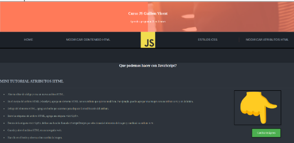
Funcionalidad:Al hacer click sobre el botón que mostrará esta pequeña funcionalidad podemos observar que cambiara la imagen y mostrará una imagen diferente.
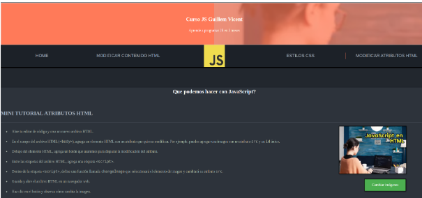
Usuario2-ESLINT
Empezaremos instalando el plugin para eslint de html. Después crearemos el archivo “eslintrc.json” donde configuraremos la identación de nuestros archivos html. Posteriormente haremos un hook que antes de hacer un commit comprobará que la indentación de nuestros archivos “.html” sea la correcta
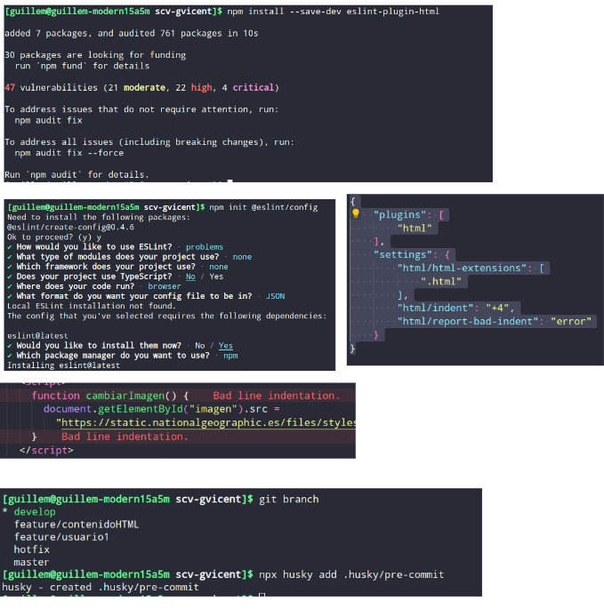
Usuario2-Contenido-Merge-Develop
Después de terminar de implementar las funcionalidades del usuario2 en la rama feature/contenidoHTML, haremos un push a su respectiva rama remota. Posteriormente desde la rama develop haremos un merge sobre la rama feature/contenidoHTML
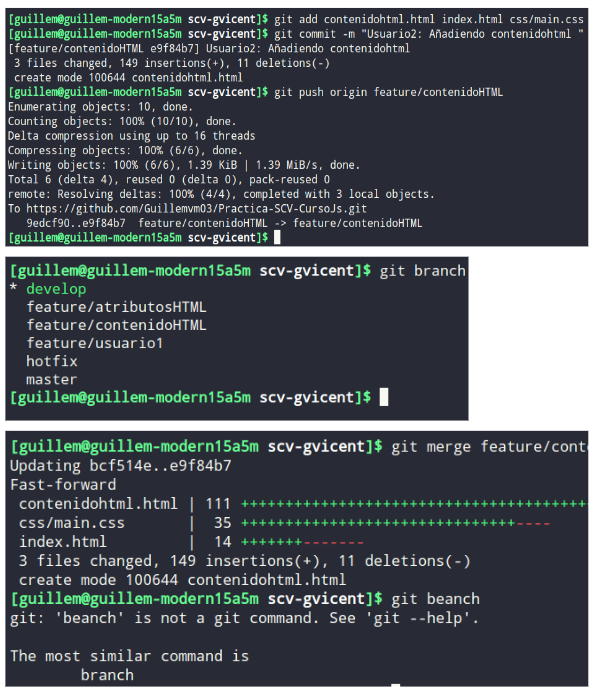
Usuario2-Atributos-Merge-Develop
Después de terminar de implementar las funcionalidades del usuario2 en la rama feature/atributosHTML, haremos un push a su respectiva rama remota. Posteriormente desde la rama develop haremos un merge sobre la rama feature/atributosHTML
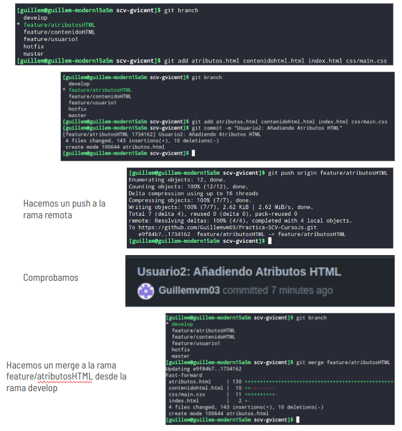
USUARIO3
Usuario3-Comandos-Estilos-CSS
Crear feature/estilosCSS:Una vez que hayamos incorporado todas las funciones del usuario 2 en la rama "develop", procederemos a crear una nueva rama denominada "feature/estilosCSS" desde la cual trabajaremos en colaboración con el usuario 3.
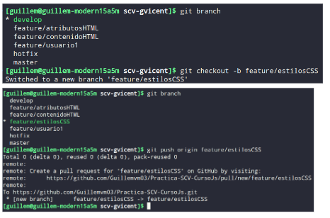
Código implentado:Este código HTML y JavaScript permite cambiar el color de fondo de un párrafo y luego restablecerlo a su color original.
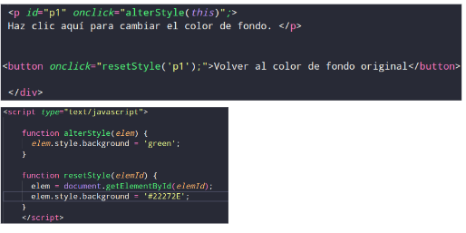
Usuario3-Desarrollo-Estilos CSS
Archivo estilos.html: En el archivo estilos.html añadiremos una breve descripción de cómo funciona y también añadiremos una pequeña funcionalidad que mostrará al usuario un de como se cambian los estilos css con js.
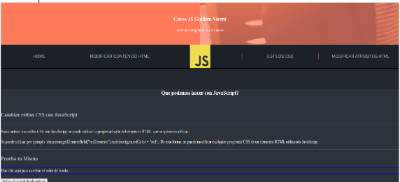
Funcionalidad:Al hacer click sobre el párrafo indicado podremos observar cómo cambia su mismo color del fondo. Tambíen podemos restablecer su color
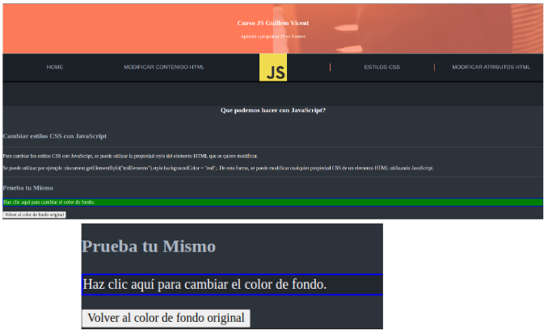
Usuario3-Git-Flow
Después de realizar las debidas implementaciones en el usuario 3, haremos un push desde su rama de feature a la rama remota. Posteriormente implementaremos los cambios de esta rama a la rama develop con un merge
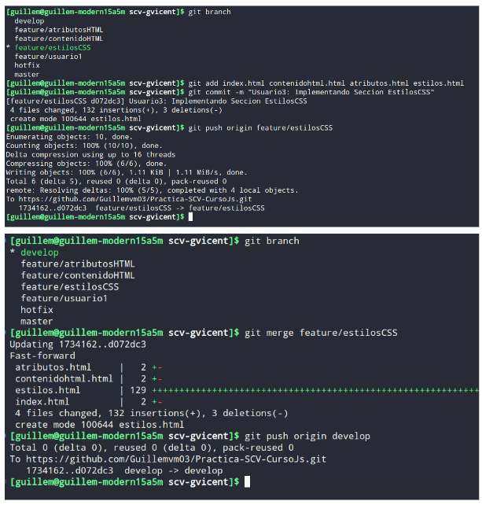
Usuario3-Release v1.0
Vamos a crear una rama “Release/v1” desde develop ya que es la rama que contiene todas las features.
Vamos a hacer un commit sobre esta y posteriormente a añadir un tag “v1.0” sobre este mismo commit. El ultimo paso trabajando en remoto será subir la rama release al repositorio remoto.
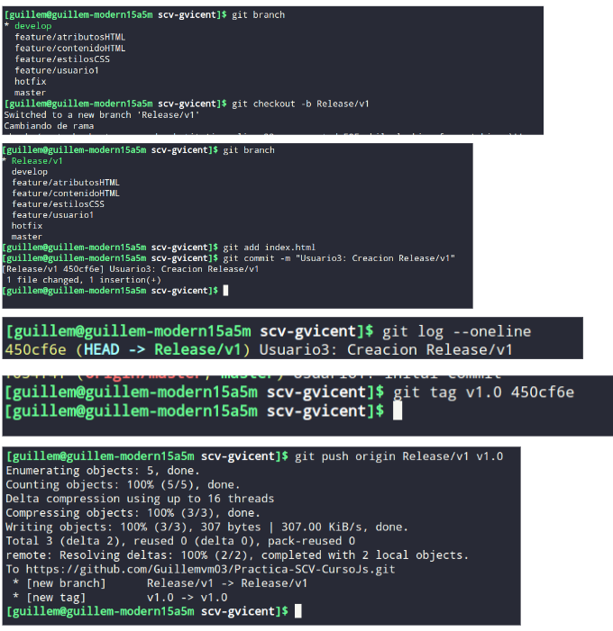
Usuario3-Release v1.0-Github
Ahora ya desde github vamos a crear una nueva release y le asignamos el tag v1.0 que anteriormente hemos creado. Más tarde vamos a hacerle un pull request desde la release a la rama master
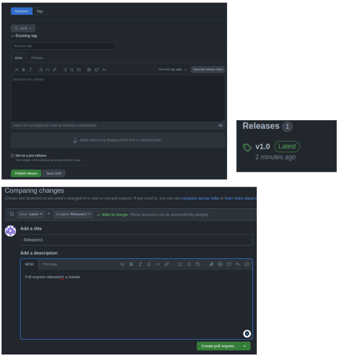
USUARIO 1 MEJORA
Usuario1-Mejora-Hotfix
Desde master que ya tendrá todas las funcionalidades implementadas vamos a crear una nueva rama desde la que realizaremos las mejoras con el usuario1.
-He tenido que modificar también el hook para que mire si está en esta rama de hotfix.
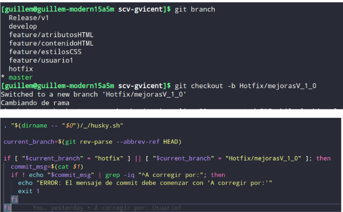
Usuario1-Mejora-Hotfix-Funcionalidad
He añadido al archivo “contenidohtml” una funcionalidad que muestra una lista de tareas con tres tareas iniciales. También hay un campo de entrada de texto y un botón para agregar nuevas tareas.
El JavaScript define una función addTask() que se ejecuta cuando se hace clic en el botón "Añadir". Esta función toma el valor del campo de entrada de texto, crea un nuevo elemento de lista (li), y añade el valor del campo de entrada
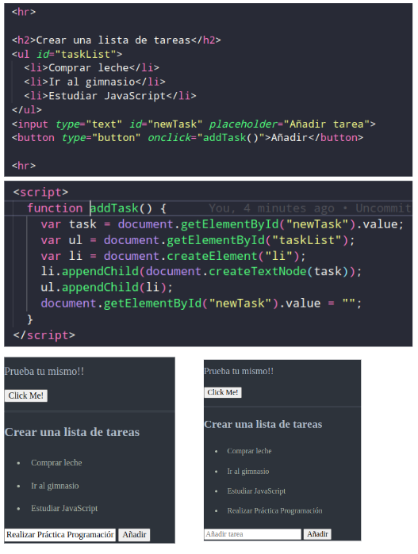
Usuario1-Mejora-Hotfix-Git
Una vez que hayamos implementado la funcionalidad nueva, vamos a subir los cambios al repositorio remoto.
Posteriormente desde nuestro github realizaremos dos pull request desde esta misma rama, uno a master y el otro a develop.
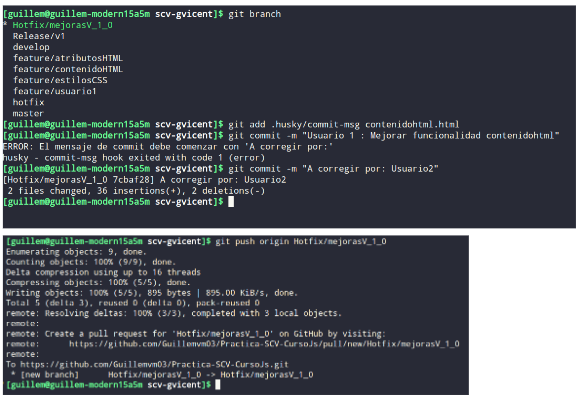
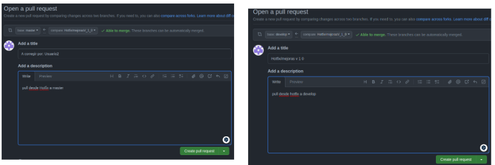